Pablo Emilio Escobar Gaviria
Becenevén „El Doctor”, „El Patrón” vagy „Don Pablo” (Rionegro, 1949. december 1. – Medellín, 1993. december 2.) kolumbiai drogbáró és narkoterrorista, aki hatalmának csúcsán az egész világon megtermelt kokainmennyiség kereskedelmének
a 80%-át tartotta a kezében, ezzel évente közel 2 milliárd dolláros forgalmat lebonyolítva.
1989-ben a Forbes magazin szerint a világ 7. leggazdagabb embere volt. A Medellín kartell irányítójaként legszebb éveiben napi 60 millió dolláros profitot termelt.
Kokainkirálynak („The King of Cocaine”) is nevezték.
Élete
Ifjúkorának háttere
A korabeli ifjúság erőszakos légköre hamar átragadt Escobarra, megalapozva lelkiismeretlenségét céljai eléréséhez.
Ennek a légkörnek a forrása a vidék egyenlőtlen vagyoni eloszlása volt.
Escobar születésének idején a lakosság mindössze 3%-a jelentette azt a kevés családból álló gazdag hatalmi elitet, akik a földterületek 97%-át és Kolumbia nyersanyagait, többek közt a bányákat, az olajkutakat, emellett a kávé- és banánültetvényeket is uralták.
Ez az egyenlőtlen eloszlás a kolumbiai nép nagy részét bénító szegénységben tartotta.
1948-ban a liberális és reformer elnökjelöltet, Jorge Eliécer Gaitánt lelőtték.
Ez népfelkeléshez, az úgynevezett El Bogotazóhoz vezetett, amely leginkább a vidéki övezetekben állandósult nagy vehemenciával; vallásos buzgalom és mások hatalom- és földigénye állhatott a hátterében.
Ez a Violenciába, azaz kegyetlen polgárháborúba torkollott a liberális és a konzervatív párt követői között.

Ifjúsága
Pablo Emilio Escobar Gaviria Antioquia megyében, a Rionegro nevű, közepes méretű városban született, Abel de Jesús Escobar állattenyésztő és Hermilda Gaviria tanárnő hét gyermeke közül harmadikként. Családjának tizenkét hektár földje és tehenei voltak. A Frontino és Rionegro környéki, viszonylag jómódú szarvasmarha-gazdaságok később a liberális katonai alakulatok és a hegyi gerillák közötti erőszakos összecsapások fő helyszínei lettek. A család Envigadóba költözött, ott Hermilda egy kisiskolát alapított. Pablo Escobar Envigadóban csatlakozott egy nihilista ifjúsági mozgalomhoz, a Nadaismóhoz, és 13 évesen kezdett kolumbiai marihuánát szívni. Iskoláját, a Liceo Lucrecio Jaramillot-t tiltakozásul 1966-ban, idő előtt otthagyta.
Fiatalságát az utcán töltötte unokatestvérével, Gustavo Gaviriával, akivel Medellín piroslámpás negyedének, a Jesús el Nazarenónak bárjaiban is gyakran megfordultak. A Barrio Antioquiaban tett szert ismertségre a helyi alvilág körében, ami későbbi életére nézve fontos állomás volt. Lőfegyverek kerültek a birtokába, ami hamar elhozta neki más bandák tiszteletét, akik akkoriban többnyire csak késekkel és machetékkel voltak felfegyverkezve. Korán csatlakozott egy marihuána-csempészbandához, és részt vett egy utcai rablótámadásban is, emellett pedig csempészett Marlboro cigarettával is kereskedett. Anyja szerint tevékenysége nem felelt meg a tisztességes elvárásainak, hiszen idejekorán akart magának nagy hatalmat szerezni. 20 évesen Escobar autókat kezdett lopni, ezeket szétszerelte, majd orgazdaként eladta. Nem sokkal később bandájával már komolyabb bűncselekményeket is elkövettek, gazdag polgárokat raboltak el, akiket gyakran meg is öltek a váltságdíj kifizetésének ellenére is. Escobar ezzel is demonstrálni akarta a hatalmát. 1971-ben elrabolta a nép körében eléggé népszerűtlen iparost, Diego Echavarríát, és megfojtotta a váltságdíj átvétele után. Tettének híre ment Medellínben, ennek következtében megkapta az „El Doctor” ragadványnevet. Az 1970-es évek közepén a „Marimba”-marihuánakereskedelem a háttérbe szorult, mert egy másik kábítószer, a kokain jött divatba. Ennek az új és igen jól működő üzletnek Escobar, az Ochoa-testvérek, Carlos Lehder és José Rodriguez Gacha voltak az úttörői. Escobar felhasználta az óriási üzletnek ígérkező kereskedelmi lehetőségeket társadalmi felemelkedéséhez. Az 1970-es években óriási drogbirodalmat épített föl és hatalmas vagyonra tett szert, előfordult, hogy egy nap 1,5 millió amerikai dollárt keresett. Ekkorra már Kolumbia drogbárójaként ismerték.
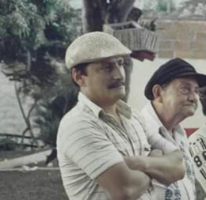 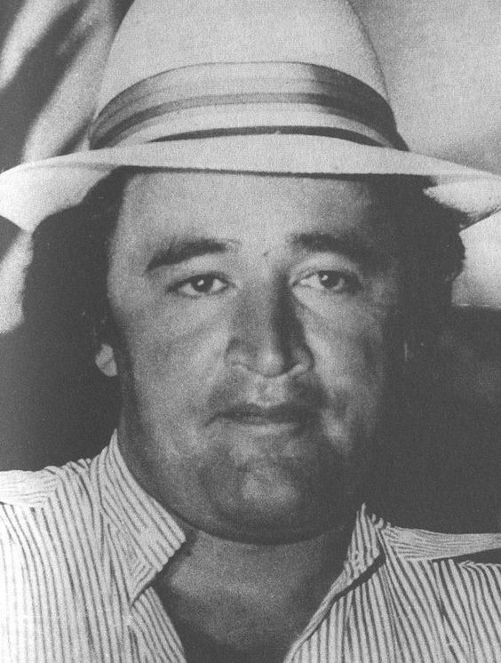 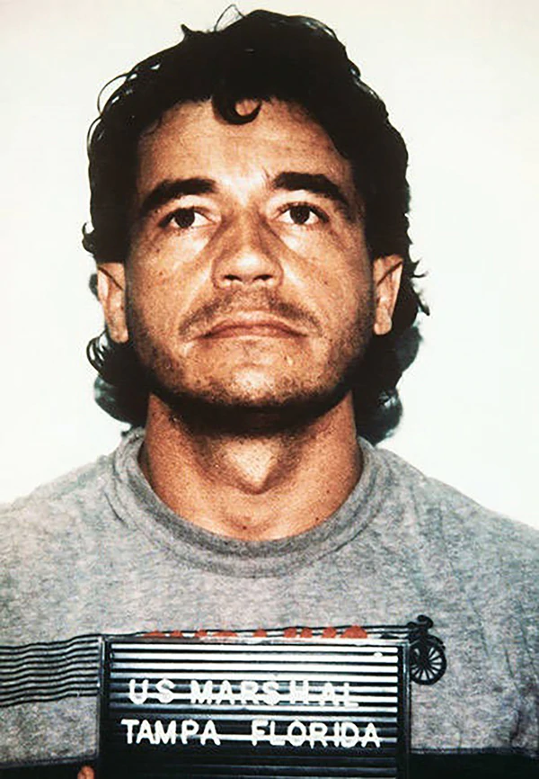 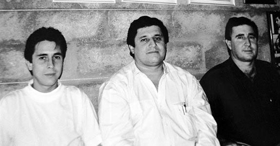Drogkereskedelem
Escobar kegyetlenségének és lelkiismeretlenségének hála gyorsan a Medellín Kartell meghatározó alakjává vált. Annak ellenére, hogy egyszer tizenegy kilogramm kokain birtoklásáért letartóztatták, soha egyetlen per sem volt ellene drogbirtoklásért vagy drogkereskedelemért, mert az ellene tanúskodó rendőr tisztázatlan körülmények között meghalt. Halálos fenyegetéseket kaptak azok a bírók is, akik közel álltak ügyéhez, emiatt a gyilkossági pert elvetették.
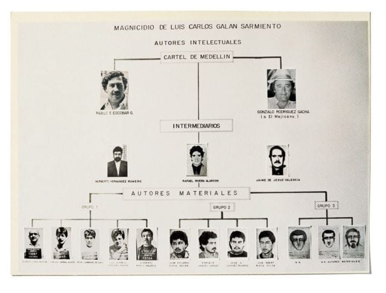1975-ben Escobar megismert egy jómódú, Rubin fedőnevű pilótát Medellínből, aki folyékonyan beszélt angolul, ismert volt Miamiban, és éppen az Ochoa-testvéreknek (Alsonso, Jorge és Fabio) dolgozott. „Rubin” Miamiban sportrepülőgépet vett, és további pilótákat toborzott. Az első kokaincsempész Medellínből Fabio Restrepo volt, Rubinnal 1975-ben egy vagy két szállítmány kokainnal (40–60 kg) repültek Miamiba, és legalább 40 000 amerikai dollárt kerestek az üzleten. Escobar megkapta Jorge Ochoától az engedélyt, hogy a tiszta kokaint Restrepo-nál adja el. Ő viszont kivégeztette Restrepót, és „Rubin”, valamint az Ochoa-testvérek számára nyilvánvalóvá vált, hogy ettől kezdve Escobarnak dolgoznak.
1976-ban Escobar feleségül vette a 15 éves María Victoria Henao-t. Két gyerekük született, Juan Pablo és Manuela. A házasságot Escobar nagyon boldognak értékelte, ennek ellenére számtalan fiatal nővel csalta meg a feleségét. Ezen nők egyike terhes lett, őt Escobar bérgyilkosai megölték. Jhon Jairo Velásquez, alias „Popeye” volt a legközelebbi bizalmasa és Escobar bérgyilkosainak főnöke, ő Escobar parancsára több mint 150 embert gyilkolt meg. Escobar egyébként összesen 30 bírót és nem kevesebb mint 457 rendőrt öletett meg.
1976-ban a Departamento Administrativo de Seguridad (DAS) unokatestvérét, Gustavo Gaviriát letartóztattatta, amikor Miamiba szállított kokaint. Escobart is letartóztatták, és Itagüíben börtönbüntetésre ítélték, de lefizette fogvatartóit, ezért röviddel ezután ismét szabadon engedték. Az elfogásában közreműködő DAS-hivatalnokokat kivégeztette. Ezekből az időkből származik kedvelt mondása, a „plata o plomo”, melynek jelentése ezüst vagy ólom (megvesztegetés vagy halál).
Megteremtette azt az üzleti modellt, melynek során a kokaint független ültetvényekről nyerték, Escobar pedig ellenőrizte a szállítást. A termelők ezért minimum 10% jutalékot fizettek a nagykereskedelmi árra Miamiban. Sikertelen szállítás esetén, amennyiben az árut lefoglalták a hatóságok, Escobar kifizette a vevők kárát, ez pedig a termelési költségek rovására ment. A nyereségek azonban ezzel együtt is messze meghaladták a lefoglalt szállítmányok veszteségeit. Escobar lefizette a védelmet az ültetvényektől a feldolgozáson át a forgalmazókig, így kábítószerkereskedelme zavartalanul folytatódhatott. A szállításokhoz leginkább sportrepülőgépeket használt (kb. 1 tonna/út kapacitással), de csempésztek távvezérlésű mini tengeralattjárókkal is. Ezek legfeljebb két tonna kokaint voltak képesek Kolumbia északi partjától Puerto Ricóig szállítani. Üzleti tevékenysége utolsó fázisában 10 tonna kokaint vitetett ki az Amerikai Egyesült Államokba egy átépített Boeing 727-tel.
Gacha és Lehder eleinte részben Escobarnak dolgozott, részben viszont saját zsebbe. 1975-ben lefoglaltak egy 600 kilogrammos kokainszállítmányt egy repülőgépen Caliban; ez az intézkedés egy hétvége alatt 40 ember halálát jelentette, mert a szervezetek kölcsönösen fúrták egymást, volt, hogy a rendőröknek súgtak egy szállítmányról, így az üzlet megbukott. A mérhetetlen gazdagság egy új társadalmi réteget hozott létre Kolumbiában, akik villákkal, diszkókkal és egyéb fényűző dolgokkal tetszelegtek.
Escobar sógora, a baloldali Mario Henao segítségével Escobar tevékenysége nyomán kiérdemelte a "hazafias" jelzőt, mert egy új, modern és haladó Kolumbiát épített fel. Medellínben Escobar saját újságot adott ki, a Medellín Cívicót, amelyben saját személyének dicsőítésével foglalkozott. Ő építtette a Pablo Escobar negyedet azoknak a medellíni szegényeknek, akik még saját lakással sem rendelkeztek. Escobar Medellínben nagyvonalú munkaadónak számított, és droglaborjaiban magas béreket fizetett a személyzetének. 1978-ban Medellín városi tanácsának képviselőjévé választották, politikai immunitást szerzett amely megvédte őt a további büntetőeljárásoktól. A diplomata státuszt családja utazásra használta Miamiba, ahol luxusvillákat vásároltak, valamint egy 8 millió dolláros farmot Planationnél, Broward Countyban. A kolumbiai drogbáró követte azon jómódúak hagyományait, akik gazdagságukat egykor a rabszolgamunkának, a dohány-, kinin-, arany- és smaragdcsempészetnek, valamint földek elkobzásának köszönhették a polgárháborúk alatt.
1981-ben Escobar Marta Ochoa elrablása után megalapította saját magánhadseregét, a Muerte a los Secuestradorest (MAS). A milícia felállítását 223 drogkereskedővel íratta alá, majd röpcédulák ledobásával egy futballstadion fölött tette ismertté. A MAS létrehozását tekintik egyúttal a Medellín Kartell alapító dátumának is. 1982-ben Escobar megválasztatta magát a kolumbiai kongresszus képviselőjének. A liberális párt képviselője volt, a tanácsüléseken érződött a népszerűsége, és „Paisa Robin Hood”-nak nevezték el. Amikor a neve nyíltan összefüggésbe került a drogkereskedéssel, kényszerítették, hogy lemondjon mandátumáról. Pénzügyi hatalma és összeköttetései révén azonban továbbra is nagy befolyása volt a politikára, és politikusok tucatjait tartotta markában megfelelő összegű kenőpénzek fejében.
1983-ban Manuel Noriega a Medellín Kartell felszámolását ajánlotta, és nagyvonalú befektetési lehetőségeket a drogpénzeknek. Rodrigo Lara Bonillas meggyilkolása után Escobar, Lehder, Gacha és az Ochoa-testvérek Panamába repültek. Ebből az időből ered Escobar ezen idézete: „Inkább egy sír Kolumbiában, mint egy börtöncella az Egyesült Államokban.”
1984-ben a világ legsikeresebb kokainkereskedője volt, a kokainpiac nagy része az ellenőrzése alá tartozott (80% Kolumbiában). A legnagyobb nyereségét az Amerikai Egyesült Államokba való kokaincsempészéssel érte el, ahol a kokaint több mint háromszor olyan drágán adhatta el, mint Kolumbiában. Egy kilogramm kokain értéke az eredeti 9000 dollár helyett már 30 000 dollárra emelkedett, amint átért a határon. Mivel az eredeti 90%-os tisztasági foka az Egyesült Államokban 30%-ra lett felütve, így az értéke 90 000 dollár fölé emelkedett.
Még 1984-ben az amerikai DEA megsemmisítette Escobar nagyszabású kokainlaboratóriumait, a Tranquilandiát és a Vila Cocát, és lefoglalt 14 tonna tiszta kokaint, amivel súlyos kárt okozott a Medellín Kartellnek. Az Egyesült Államok légiereje ezen felül gyomirtót permetezett a kokainültetvényekre Kolumbia esőerdeiben.
1985-ben Gacha és Escobar közvetítésével megkezdték a Magdalena-völgy megtisztítását a FARC-gerilláktól. A műveleteknek, amelyeket brit és izraeli katonák támogattak, parasztok és földmunkások ezrei estek áldozatául. A Medellín Kartell félkatonai kötelékei és katonai alakulatok együttes bevetése a FARC, ELN és M-19 csapatoknak a Magdalena-völgyben súlyos veszteségeket okozott. Ugyanabban az évben az M-19 (Movimiento 19 de Abril) baloldali gerillaszervezet betört Bogotá Igazságügyi Palotájába. Escobar részvétele az ügyben tisztázatlan maradt.
1986-ban kokain-túladagolás következtében meghalt egy amerikai kosárlabdasztár, Len Bias. Ennek következtében az emberek elkezdték elítélni a kábítószerezést, és a probléma a figyelem középpontjába került. Escobar megítélése hamar megváltozott és a világ egyik legmegvetettebb bűnözője lett. 1988-ban George Bush lett az Egyesült Államok elnöke, aki egymilliárd dollárt fektetett a Kolumbiából származó drogkereskedelem elleni harcba.
1989-ben a Forbes magazin szerint Escobar 2,7 milliárd amerikai dolláros magánvagyonával a világ hetedik leggazdagabb embere volt, és a nemzetközi kokainpiac 80%-át ellenőrizte.
Escobar szociálisan elkötelezett ember volt: pénzéből kórházakat finanszírozott, szociális lakásokat és iskolákat építtetett, ezért szülővárosában, Medellínben a szegényebb emberek istenként tisztelték a nevét. Hazai egyesületének futballstadionját Envigadóban az ő pénzéből építették. Escobar Medellínben iroda- és apartman-komplexumokat, diszkókat és számtalan éttermet hozott létre, melyek közül némelyik még ma is látható.
 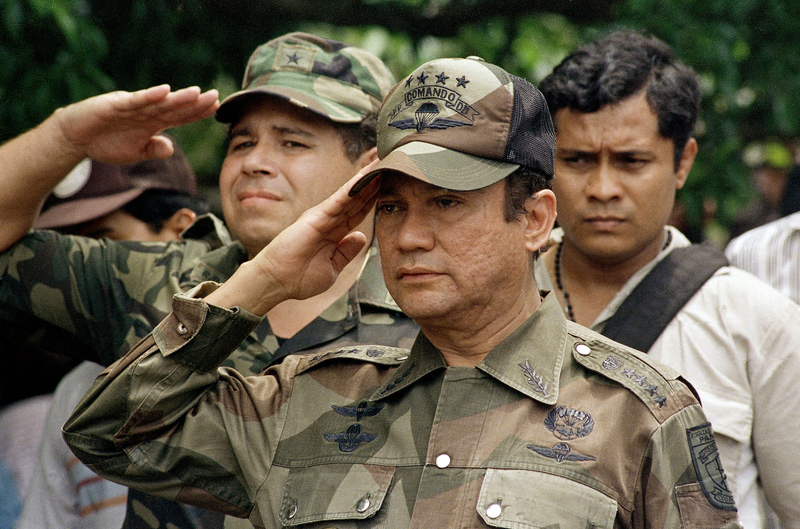
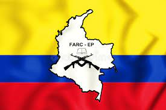
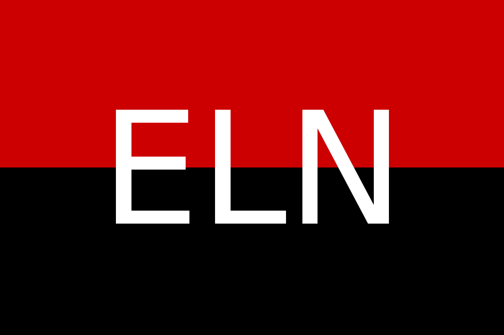
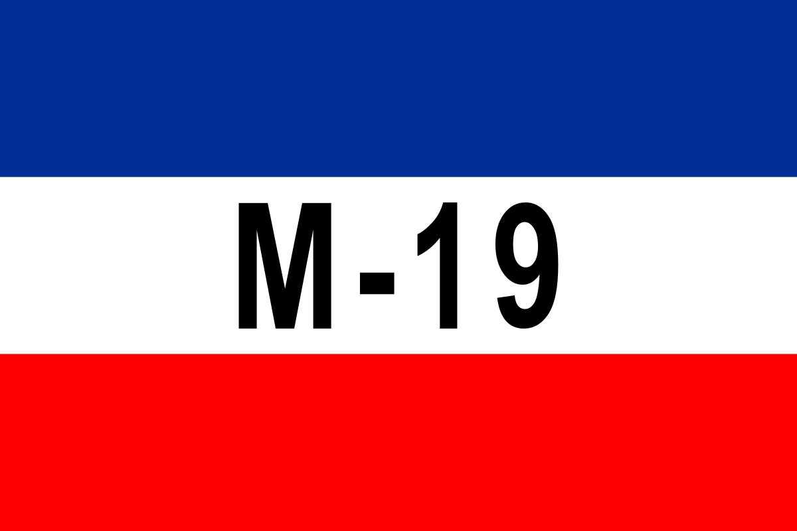
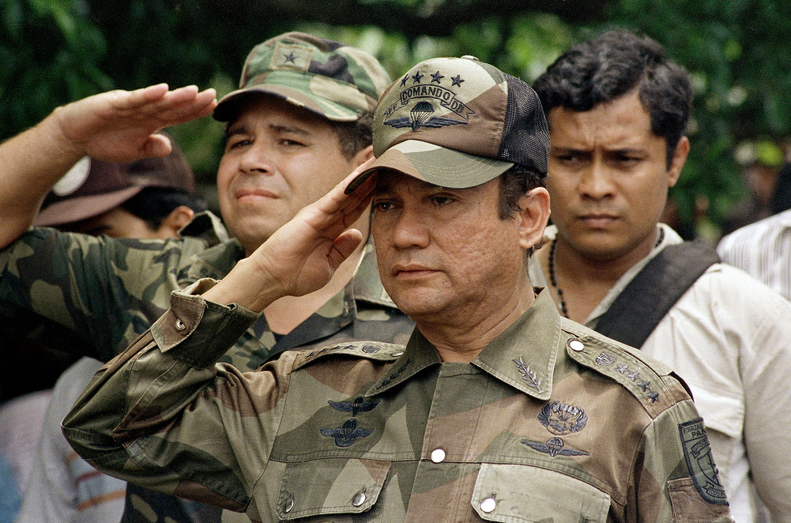
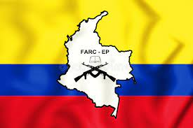
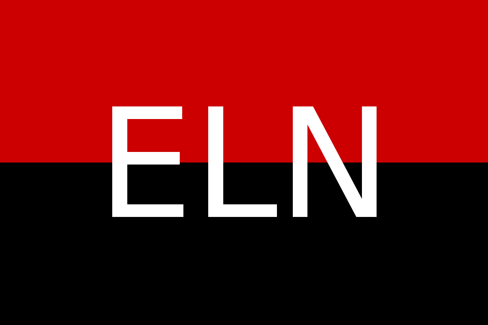
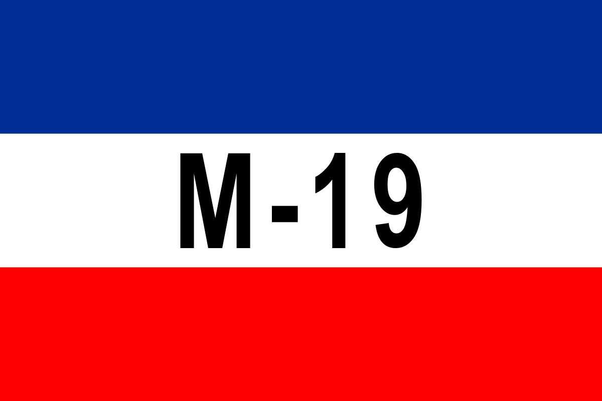
Üldözése és halála
A kolumbiai kormány a drogkereskedők ellen az Egyesült Államok felé kiadatási törvényjavaslattal állt elő. Ez véres leszámolásba és kartellháborúba vezette az országot. Escobar rendőrök, bírók és ügyészek százait gyilkoltatta meg, és a fővárost, Bogotát bombaterrorral árasztotta el. Az „El Espectador“ napilap címlapjára is felkerült egy nagy bogotái bombamerénylet. Emellett számtalan emberrablást tulajdonítanak Escobarnak, melyek Kolumbia közszereplőinek hozzátartozóit célozták meg, gyakran halálos kimenetellel. Saját védelmére testőröket szerződtetett, és rengeteg bérgyilkosnak adott munkát, rendőrök meggyilkolásáért például 500 és 1000 dollár közötti „jutalom” járt.
Escobar elfogására Kolumbia rengeteg pénzt és emberi erőforrást vetett be, miután 1989-ben Luis Carlos Galánt, a liberális párt elnökjelöltjét egy választási rendezvényen Soachában, Bogotá egyik elővárosában meggyilkoltatta. Galán megválasztása esetén kemény politikai fellépést ígért a drogmaffia ellen. Végül a szintén liberális César Gaviria nyerte az elnökválasztást, így az ő nevéhez kötik az Escobarral való leszámolást (családnevük egyezősége csak véletlen). Hosszas béketárgyalások után 1991-ben Escobar végül fegyverszünetet kötött a kormánnyal, és feladta magát a rendőrségen, miután az Egyesült Államokba való kiadatási törvényjavaslatot nem szavazta meg a parlament. „Börtönbüntetését” a saját maga által építtetett és luxus módon berendezett La Catedral börtönben, születési helyének, Envigadónak a közelében kezdte meg. Több botrány után (többek közt Escobar drogkereskedőket juttatott be a börtönbe, és ott megölette őket) a kormány állami börtönbe akarta áthelyezni, ekkor a szökés mellett döntött, amelyet sikeresen végre is hajtott.
16 hónappal a szökését követően, 1993. december 2-án, a 44. születésnapja utáni napon Escobar a fiával telefonon beszélgetett, így a rendőrség vissza tudta követni a hívást és azonosította a rejtekhelyet. A hivatalos jelentés szerint, egy amerikai-kolumbiai elit alakulat Hugo Aguilar műveleti parancsnok vezetésével rajtaütött a testőrével bujkáló Escobaron és egy rövid tűzharc során lelőtte. A rendőrség becslése szerint, az agyonlőtt drogkereskedő temetésén 20 000 ember vett részt a Medellín külvárosában lévő temetőben.
Juan Pablo Escobar Henao (jelenlegi nevén: Juan Sebastián Marroquín Santos), a drogbáró fia, kutatásai során arra a következtetésre jutott, hogy apja valójában öngyilkos lett – főbe lőtte magát –, amit bizonyítékokkal is alá tud támasztani. Erről is írt saját, „Apám, Pablo Escobar“ című könyvében.
Halála után családja a polgárháború tépázta Mozambikba távozott, majd onnan turistavízummal Argentínában telepedtek le. Fia később építészetet tanult, és építészmérnökként dolgozik az argentin fővárosban, Buenos Aires-ben. Húga, Manuela, villamosmérnök lett és az amerikai Észak-Karolina középső részén él, szintén álnéven.
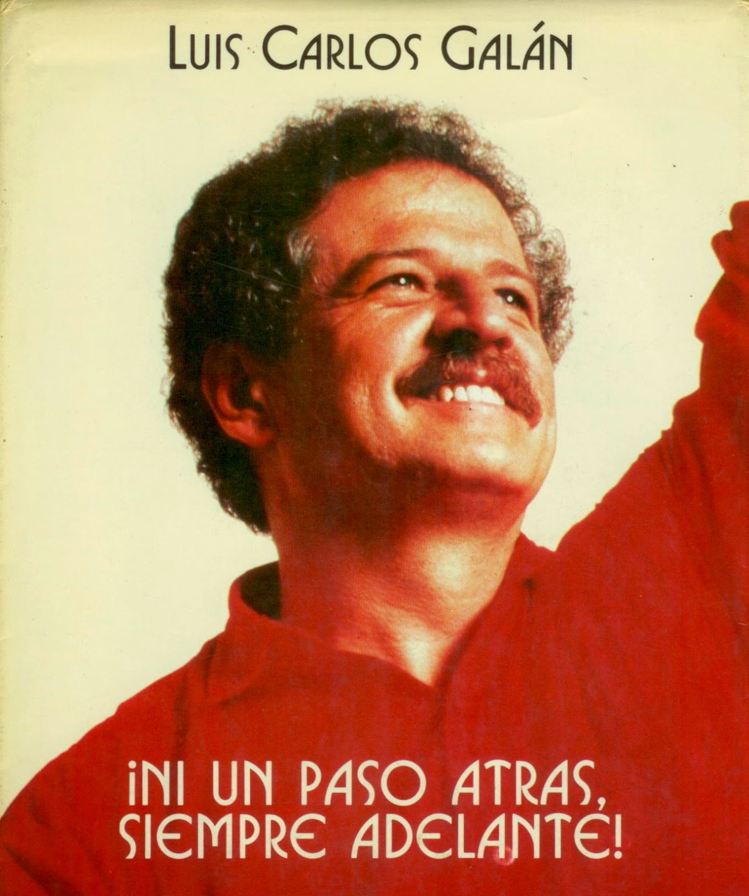 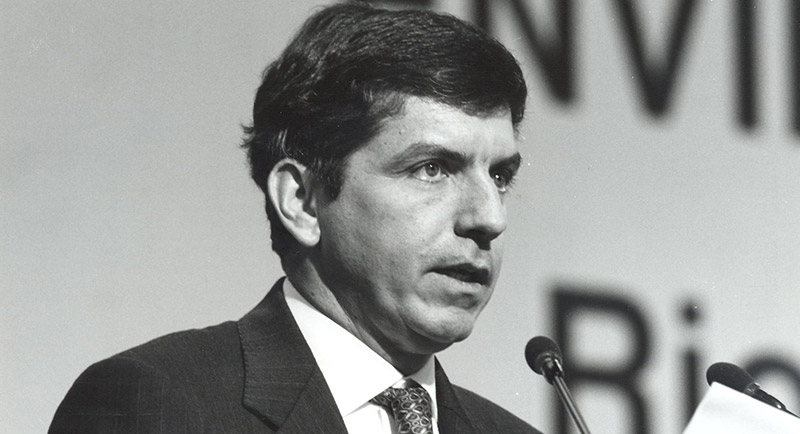 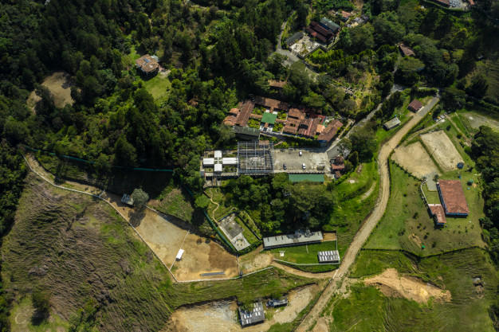Drogpénzek zárolt bankszámlákon
2009. november 7-én egy online cikk adta hírül, hogy milliós nagyságrendű drogpénzek voltak luxemburgi, svájci és panamai bankszámlákon, melyeket azonnal zároltak. Még 1989-ben Jean-Paul Frising szerint az amerikai hatóságok kérésére összesen 5 millió euró értékű bankszámlát fagyasztottak be 5 luxemburgi banknál (BNP, Crédit Lyonnais, BCCI). A zároláshoz egy bírósági végzésre volt szükség az Egyesült Államoktól, ami a számlatulajdonos bűnösségét drogkereskedelemben vagy pénzmosásban mondja ki.
Politikája,emlékezete
Escobar megváltoztatta és megosztotta a kolumbiai államot, és tartósan károsította világszerte az ország megítélését, amelyet „Narkó-köztársaságként” bélyegeztek meg.
George Bush Escobarról első számú államellenségként beszélt. Az Escobar által megteremtett erőszakkultúra és a halála utáni munkanélküli kolumbiai bérgyilkosok súlyosbították a biztonsági helyzetet. Különösen Medellínben radikalizálódott a nyomornegyed, és ez hosszan éreztette hatását. Sokukból, többnyire középkorú bérgyilkosokból, akik Escobarnak, vagy Gachának dolgoztak, az AUC félkatonai milíciái lettek.
Medellínben Escobart, főként lakónegyedében, Envigadóban ma már a nép hőseként tisztelik. Az Atlético Nacional futballegyesület felemelkedését Escobar anyagi támogatásának köszönheti. 2003 áprilisában Medellín néhány városrészében a választási plakátokon is megjelent Escobar arcképe, aminek eredeti okai ismeretlenek maradtak.
Hacienda Nápoles
1979-ben Escobar 63 millió amerikai dollárért vett egy 3000 hektár területű farmot Puerto Triunfónál, Río Magdalenán, és fényűző vidéki kastélyt építtetett rajta. A birtoknak saját repülőtere, helikopterleszállója, bikaviadal arénája, hat úszómedencéje, valamint egy nőgyógyászati rendelője is volt emellett vízisíeléshez alkalmas mesterséges tavakat és teljes utcahálózatot építettek ki rajta. Állatkertjébe Escobar többek között elefántokat, bivalyokat, oroszlánokat, orrszarvúakat, gazellákat, zebrákat, vízilovakat, tevéket és struccokat hozatott be, a fiának pedig dinoszauruszfigurákat készíttetett.
A Hacienda Nápolest több mint száz személy számára tervezték. A bejáratot egy sportrepülőgéppel díszítették, mégpedig azzal, amelyikkel Escobar az első kokainszállítmányt Medellínből megszervezte. Barátai szórakoztatására kolumbiai szépségkirálynőket hívott, akiket megfelelő összegért egyéb szolgáltatásokra is igénybe lehetett venni. Fogadásokon akár drága sportautókat is lehetett nyerni, de a vesztes igen rosszul is járhatott; ilyenkor levágták a haját, kokain helyett különböző dolgokat, például rovarokat kellett felszippantania, vagy meztelenül kellett fára másznia.
A Haciendán számtalan kivégzés is történt. Egy munkásnak, aki meglopta Escobart, összekötözték a kezeit és a lábait, és a vendégek szórakoztatására belefojtották az egyik úszómedencébe. Az építészt, aki egy építési hibát vétett, és aki miatt a villában az első emelet beomlott, egyszerűen lelőtték.
Miután 2007-ben rablók kifosztották, a romos villából szabadidőpark lett „Parque Temático Hacienda Nápoles“ néven. Escobar vízilovait szabadon bocsátották Kolumbia trópusi esőerdeiben, ahol el is szaporodtak.
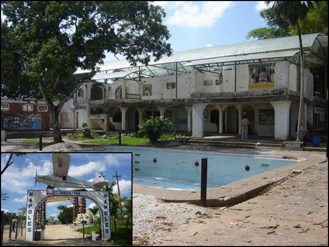Virginia Vallejo
Virginia Vallejo televíziós újságíró és bemondó 1983-tól 1987-ig dolgozott Escobarnak, aki nagyon kedvelte. Vallejo 2007-ben nyilvánosságra hozta az „Amando a Pablo, odiando a Escobar” (Pablót szeretni, Escobart gyűlölni) című művet, amelyben Escobart politikusokkal, úgy mint Alberto Santofimio, és elnökökkel, mint Alfonso López Michelsen, Ernesto Samper és Álvaro Uribe Vélez hozta kapcsolatba, ezzel pedig politikai botrányt robbantott ki Kolumbiában.
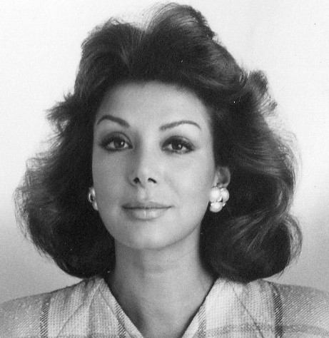